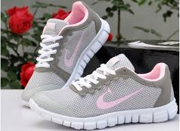

В разделе не хватает ссылок на источники (см. рекомендации по поиску). Информация должна быть проверяема, иначе она может быть удалена. Вы можете отредактировать статью, добавив ссылки на авторитетные источники в виде сносок. (22 апреля 2020) В конце XVIII столетия люди носили обувь с каучуковой подошвой, которые назывались парусиновыми туфлями, но они были довольно грубыми и примитивными, не было разделения на правую/левую ногу. 1895 — Джозеф Уильям Фостер (Болтон, Англия) изготовил первую шипованную обувь. Приблизительно в 1892 году «Американская Резиновая Компания» придумала более удобную резиновую обувь с верхом из ткани, которая получила название «кеды» («keds»). К 1917 году эта обувь поступила в массовое производство; она получила название «сникеры», образованное от англ. to sneak — красться, потому что человек, носящий их, шёл так тихо, что мог подкрасться к кому угодно.
В 1920 году в Германии немецкие предприниматели Адольф и Рудольф Дасслеры организовали фабрику по производству обуви для тренировок спортсменов-бегунов. В 1930-х и 1940-х годах обувные компании начали производить специальную обувь для каждого вида спорта отдельно. Первые кроссовки для тенниса появились во Франции и были произведены фирмой Spring Court. В 1950-х годах в США в связи с демографическим ростом возросла популярность кроссовок как легкой и практичной обуви. В то время кроссовки были не очень дороги по сравнению с классической кожаной обувью. В течение первой половины XX века спортивную обувь носили главным образом для занятий спортом. Но в пятидесятых годах дети начали носить их, следуя за модой, после выхода популярного фильма «Бунтарь без причины» (англ. «Rebel Without a Cause») с Джеймсом Дином в главной роли. В 1957 году производители классической обуви из кожи решили бороться с оттоком клиентов, поэтому появилось первое заявление, что кроссовки очень вредны для детей и способствуют у них развитию дистрофии стопы. Но это не стало преградой, и кроссовки всё также оставались популярными. В начале 1960-х годов часть кроссовок ввозилась на рынок США из Японии. Компания Nike в то время заключила контракт с Onitsuka Tiger и занималась импортом японской обуви под собственным названием Blue Ribbon Sports.
В 1970-х в США стал популярным бег трусцой, что позволило американским фирмам предложить кроссовки для новичков в спорте. Кроме того, люди начали носить кроссовки как повседневную обувь. Впервые появились кроссовки, созданные для повседневного использования. Многие известные личности стали надевать кроссовки на различные мероприятия. Вуди Аллен носил кроссовки в театре и балете, музыканты группы Led Zeppelin носили кроссовки во время съемок документального фильма, Дастин Хоффманн, играя в фильме роль репортера Карла Бернштайна, также использовал кроссовки. В 1990-х многие обувные компании всего мира переключились на производство кроссовок. В это время ведущим брендами обуви индустрии кроссовок стали такие марки, как Adidas, ASICS, Converse, DC Shoes, Fila, Gola, K-Swiss, New Balance, Nike, Puma, Reebok, Saucony, LA Gear. В 2000-х появились производители, выпускающие босо-обувь, кроссовки с равной толщиной подошвы (без каблука или «zero drop»), кроссовки, учитывающую форму стопы, кроссовки со встроенными датчиками давления[1]. Некоторые производители вышеупомянутых кроссовок: Merrell, Altra, Vibram, Newton, Puma[2]. Производители и история продукции Converse и Чак Тэйлор Converse All-Stars В 1917 году Маркиз Миллз Конверс (Marquis Mills Converse) произвёл первую обувь, созданную только для баскетбола, которая была названа Chuck Taylor All-Stars. В 1923 году компания Converse начала рекламную кампанию своей продукции с участием полупрофессионального баскетболиста Чака Тейлора[3][4], подпись которого сохранилась на логотипе Converse.

Adidas Кроссовки Adidas Superstar выпускаются с 1969 года В 1920 году сын обувщика Адольф Дасслер открыл обувную мастерскую. Материалом для обуви служило списанное военное обмундирование, а подошвы вырезали из старых автомобильных покрышек. В 1923 году в фирму пришёл старший брат Адольфа Рудольф, и 1 июля 1924 года ими была основана фирма по производству спортивной обуви Gebrüder Dassler и запатентованы шиповки и бутсы с защитной подушечкой под стопой. В обуви фирмы на Олимпийских играх 1936 года выступал легкоатлет Джесси Оуэнс, выигравший четыре золотых медали. В 1948 году из-за испортившихся отношений братья разделили фирму. Адольф организовал компанию Adidas (название сложено из уменьшительной формы имени Ади и первых трех букв фамилии), а Рудольф — компанию Puma. Компания Adidas создала одну из самых известных моделей кроссовок — Adidas Superstar.
Puma Пара кроссовок Puma После разрыва деловых отношений с братом Рудольф Дасслер основал компанию Puma, специализировавшуюся в основном на изготовлении футбольной обуви. Nike и Майкл Джордан Air Jordan Air Jordan I, первые кроссовки Nike, созданные для Майкла Джордана, выпущены в 1984 году. Продажи кроссовок выросли в 1984 году, после того как американский баскетболист Майкл Джордан подписал контракт с компанией Nike, которая разработала для него специальные кроссовки, названные Air Jordan[5]. Даже после того как Джордан ушёл из NBA, его именные кроссовки остаются бестселлером. Когда компании, такие как Nike и Reebok, стали конкурировать, они начали изменять вид кроссовок, добавлять цвета и убирать шнурки. Кроссовки стали производиться для каждого из видов спорта (включая ходьбу), для скейтбординга и даже для фитнеса. Новые технологии Pump — одна из первых оригинальных систем подгонки кроссовок по ноге от Reebok Создание спортивной обуви является процессом непрерывной эволюции. Усилия разработчиков направлены на снижение массы кроссовок, разработку новых концепций удобства обуви, отход от традиционного построения: подметка+подошва+верх, использование новейших материалов и систем шнуровки, постоянное совершенствование производства. В Nike Air Force использовались небольшие газовые карманы для улучшения амортизации. В Reebok изобрели систему Pump — одну из первых оригинальных систем подгонки кроссовок по ноге. Puma представила технологию Puma Disc System, благодаря которой кроссовки подгонялись по стопе путём простого поворота диска. Lunar Foam — технология амортизации, используемая компанией Nike для снижения массы кроссовок, созданная совместно со специалистами NASA.
Футбольная обувь Обувь для футбола, то есть бутсы, снабжена шипами, которых может быть шесть или двенадцать. Существуют универсальные многошиповые модели, которые подходят для игры и на травяном покрытии, и в зале. Верх у них всегда сделан из кожи — натуральной или искусственной. Теннисные кроссовки Особенности теннисных моделей — устойчивость при боковых перемещениях, поддержка голеностопа при боковых перемещениях, износоустойчивая подметка, защита от ударных нагрузок при прыжках. Теннисные модели имеют широкую устойчивую подошву. Рисунок на ней указывает, для какого покрытия корта (трава, земля, синтетика) предназначены кроссовки. Теннисные кроссовки, как правило, имеют кожаный верх и небольшие нейлоновые вставки — для вентиляции. Баскетбольные кроссовки Подобно тому как теннисные кроссовки максимально приспособлены для указанного вида спорта, баскетбольная обувь предназначена именно для этой игры. Она очень хорошо фиксирует лодыжку (модели для баскетбола в основном «высокие»); обеспечивает устойчивость при боковых перемещениях и защищает от ударных нагрузок при прыжках. Баскет-кроссы могут быть с низкой платформой и с высокой.

Беговые кроссовки Беговые модели — самые лёгкие. Они отличаются от других жёсткой пяточной частью и гибкой носочной. Пяточную часть смягчают дополнительными амортизаторами. Верх беговых кроссовок выполнен из лёгких текстильных материалов — чтобы минимизировать их массу[6]. Все кроссовки, используемые для бега, делятся на два больших типа: «Тихоходы» — предназначенные для длительных и восстанавливающих тренировок (для мягкой работы)[7]. Эта категория кроссовок — наиболее многочисленная и наиболее продаваемая. «Тихоходы» лучше всего смягчают удар в момент постановки стопы на грунт. В конструкции именно этой категории кроссовок применяется больше всего технологических ухищрений. В живучести они уступают только кроссовкам для бега в тяжёлых условиях. Тихоходы, естественно, тяжелее соревновательной обуви, но при этом и намного комфортнее. «Темповики» — предназначенные для соревнований и быстрых тренировок (для жёсткой работы). По сути это кроссовки для соревнований и скоростного бега. Высокие требования к лёгкости и отзывчивости неизбежно выливаются в ограничения по массе, толщине подошвы и плотности верха кроссовок. Например, если типичная масса пары кроссовок для длительного бега составляет 300—400 граммов, то для «темповиков» этот показатель равен 120—280 граммам.